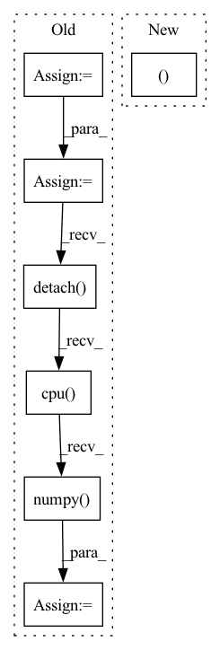

Pattern ID :26118

Before Change
device = self.device
origin_height, origin_width = image.shape[1:]
image = pad_img_to_modulo(image, mod=8)
mask = pad_img_to_modulo(mask, mod=8)
mask = (mask > 0) * 1
image = torch.from_numpy(image).unsqueeze(0).to(device)
mask = torch.from_numpy(mask).unsqueeze(0).to(device)
inpainted_image = self.model(image, mask)
cur_res = inpainted_image[0].permute(1, 2, 0).detach().cpu().numpy()
cur_res = cur_res[0:origin_height, 0:origin_width, :]
cur_res = np.clip(cur_res * 255, 0, 255).astype("uint8")
cur_res = cv2.cvtColor(cur_res, cv2.COLOR_BGR2RGB)
return cur_res
After Change
crop_result = []
for box in boxes:
crop_image, crop_box = self._run_box(image, mask, box)
crop_result.append((crop_image, crop_box))
image = (image.transpose(1, 2, 0) * 255).astype(np.uint8)[:, :, ::-1]
for crop_image, crop_box in crop_result:
In pattern: SUPERPATTERN
Frequency: 4
Non-data size: 7
Instances
Fragment ID: 78709811
Project Name: sanster/lama-cleaner
Commit Name: 43c9c22c7312dd39feac4e3783e9ec080fd64243
Time: 2022-03-22
Author: cwq1913@gmail.com
File Name: lama_cleaner/lama/__init__.py
M Class Name: LaMa
N Class Name: LaMa
M Method Name: __call__(3)
N Method Name: __call__(3)
M Parent Class:
N Parent Class:
M File Name: lama_cleaner/lama/__init__.py
N File Name: lama_cleaner/lama/__init__.py
M Start Line: 40
M End Line: 55
N Start Line: 50
N End Line: 65
'>
Before Change
curr_state_q2_value = self.q2_network(state_batch, action_batch)
new_curr_state_action, new_curr_state_log_pi, _ = self.policy_network.sample(state_batch)
next_state_target_v_value = self.target_v_network(next_state_batch)
curr_state_v_value = self.v_network(state_batch)
new_curr_state_q1_value = self.q1_network(state_batch, new_curr_state_action)
new_curr_state_q2_value = self.q2_network(state_batch, new_curr_state_action)
min_curr_state_q_value = torch.min(curr_state_q1_value, curr_state_q2_value)
new_min_curr_state_q_value = torch.min(new_curr_state_q1_value, new_curr_state_q2_value)
//compute v loss
target_v_value = (new_min_curr_state_q_value - new_curr_state_log_pi).detach()
v_loss = F.mse_loss(curr_state_v_value, target_v_value)
v_loss_value = v_loss.detach().cpu().numpy()
self.v_optimizer.zero_grad()
v_loss.backward()
self.v_optimizer.step()
After Change
curr_state_q1_value = self.q1_network(state_batch, action_batch)
curr_state_q2_value = self.q2_network(state_batch, action_batch)
new_curr_state_action, new_curr_state_log_pi, _ = self.policy_network.sample(state_batch)
next_state_action, next_state_log_pi, _ = self.policy_network.sample(next_state_batch)
new_curr_state_q1_value = self.q1_network(state_batch, new_curr_state_action)
new_curr_state_q2_value = self.q2_network(state_batch, new_curr_state_action)
'>
Fragment ID: 78709877
Project Name: x35f/unstable_baselines
Commit Name: 0fc82ae6328814fe2dad0c8e0ae1b172d3e5f981
Time: 2021-03-12
Author: ym8411012@126.com
File Name: sac/models.py
M Class Name: SACAgent
N Class Name: SACAgent
M Method Name: update(2)
N Method Name: update(2)
M Parent Class: BaseAgent,torch.nn.Module
N Parent Class: BaseAgent,torch.nn.Module
M File Name: sac/models.py
N File Name: sac/models.py
M Start Line: 75
M End Line: 129
N Start Line: 83
N End Line: 129
'>
Before Change
signal = signal[None]
// Apply a Gaussian filter to the signal
signal_tensor = torch.tensor(signal[0])
pt_gaussian = GaussianFilter(len(signal_tensor.shape), sigma=self.sigma)
signal_tensor = pt_gaussian(signal_tensor.unsqueeze(0).unsqueeze(0))
signal_tensor = signal_tensor.squeeze(0).squeeze(0)
signal[0] = signal_tensor.detach().cpu().numpy()
signal[0] = (signal[0] - np.min(signal[0])) / (np.max(signal[0]) - np.min(signal[0]))
d["signal"] = signal
else:
After Change
)
X, Y, Z = (
list(d["centroids"][d["current_idx"]].values())[0][-3],
list(d["centroids"][d["current_idx"]].values())[0][-2],
list(d["centroids"][d["current_idx"]].values())[0][-1],
)
signal[:, X, Y, Z] = 1.0
'>
Fragment ID: 78709816
Project Name: project-monai/monailabel
Commit Name: f45854cefd4034e2f4740c50a834443df48dfc65
Time: 2022-08-06
Author: diazandr3s@gmail.com
File Name: sample-apps/radiology/lib/transforms/transforms.py
M Class Name: GaussianSmoothedCentroidd
N Class Name: GaussianSmoothedCentroidd
M Method Name: __call__(2)
N Method Name: __call__(2)
M Parent Class: MapTransform
N Parent Class: MapTransform
M File Name: sample-apps/radiology/lib/transforms/transforms.py
N File Name: sample-apps/radiology/lib/transforms/transforms.py
M Start Line: 157
M End Line: 182
N Start Line: 181
N End Line: 206
'>
Before Change
states, actions, rewards, next_states, done_masks, old_log_probs = convert_to_tensor(data["state"], data["action"], data["reward"], data["next_state"], data["done"], data["log_prob"])
old_values = self.v(states).detach()
td_target = rewards + self.gamma * self.v(next_states) * done_masks
delta = td_target - old_values
delta = delta.detach().cpu().numpy()
advantage_lst = []
advantage = 0.0
for idx in reversed(range(len(delta))):
if done_masks[idx] == 0:
After Change
data = self.data.sample(shuffle = False)
states, actions, rewards, next_states, done_masks, old_log_probs = convert_to_tensor(data["state"], data["action"], data["reward"], data["next_state"], data["done"], data["log_prob"])
old_values, advantages = self.get_gae(states, rewards, next_states, done_masks)
returns = advantages + old_values
advantages = (advantages - advantages.mean())/(advantages.std()+1e-3)
'>
Fragment ID: 78709691
Project Name: seolhokim/mujoco-pytorch
Commit Name: 8e6d6eb006141b9bcc102173cfb202dcfaf9e17e
Time: 2021-05-09
Author: kilmya1@naver.com
File Name: agent.py
M Class Name: PPO
N Class Name: PPO
M Method Name: train_net(3)
N Method Name: train_net(3)
M Parent Class: nn.Module
N Parent Class: nn.Module
M File Name: agent.py
N File Name: agent.py
M Start Line: 44
M End Line: 56
N Start Line: 60
N End Line: 60